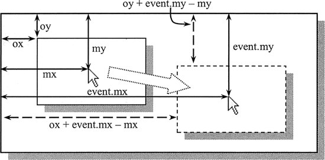

首页 > 编程笔记
JS鼠标事件（非常详细）
在 JavaScript 中，鼠标事件是 Web 开发中最常用的事件类型，鼠标事件类型详细说明如下表所示：
如下图所示，其中变量 ox 和 oy 分别记录按下鼠标时被拖放元素的纵横坐标值，它们可以通过事件对象的 offsetLeft 和 offsetTop 属性获取。变量 mx 和 my 分别表示按下鼠标时，鼠标指针的坐标位置。而 event.mx 和 event.my 是事件对象的自定义属性，用它们来存储当鼠标移动时鼠标指针的实时位置。
当获取了上面 3 对坐标值之后，就可以动态计算拖动中元素的实时坐标位置，即 x 轴值为 ox+event.mx-mx，y 轴为 oy+event.my-my。当释放鼠标按钮时，就可以释放事件类型，并记下松开鼠标指针时拖动元素的坐标值，以及鼠标指针的位置，留待下一次拖放操作时调用。
除了使用上面提到的通用事件属性外，如果想获取鼠标指针来移动某个元素，在 DOM 事件模型中可以使用 relatedTarget 属性获取当前事件对象的相关节点元素；而在 IE 事件模型中，可以使用 fromElement 获取 mouseover 事件中鼠标移到过的元素，使用 toElement 属性获取在 mouseout 事件中鼠标移到的文档元素。
首先，来看看 screenX 和 screenY 属性。这两个属性获得了所有浏览器的支持，应该说是最优选用属性，但是它们的坐标系时计算机屏幕，也就是说，以计算机屏幕左上角为定位原点。这对于以浏览器窗口为活动空间的网页来说没有任何价值。因为不同的屏幕分辨率，不同的浏览器窗口大小和位置，都使得在网页中定位鼠标成为一件很困难的事情。
其次，如果以 document 对象为坐标系，则可以考虑选用 pageX 和 pageY 属性实现在浏览器窗口中进行定位。这对于设计鼠标跟随来说是一个好主意，因为跟随元素一般都以绝对定位的方式在浏览器窗口中移动，在 mousemove 事件处理函数中把 pageX 和 pageY 属性值传递给跟绝对定位元素的 top 和 left样式属性即可。
IE 事件模型不支持上面的属性，为此还需寻求兼容 IE 的方法。而看 clientX 和 clientY 属性是以 window 对象为坐标系，且 IE 事件模型支持它们，可以选用它们。不过考虑 window 等对象可能出现的滚动条偏移量，所以还应加上相对于 window 对象的页面滚动的偏移量。
先定义一个封装函数，设计函数传入参数为对象引用指针、相对鼠标指针的偏移距离，以及事件对象。然后封装函数能够根据事件对象获取鼠标的坐标值，并设置该对象为绝对定位，绝对定位的值为鼠标指针当前的坐标值。
封装代码如下：
设计代码如下：
完整设计代码如下：
IE 事件模型支持位掩码技术，它能够侦测到同时按下的多个键。例如，同时按下左右键，则 button 属性值为 1+2=3；同时按下中键和右键，则 button 属性值为 2+4=6；同时按下左键和中键，则 button 属性值为 1+4=5；同时按下 3 个键，则 button 属性值为 1+2+4=7。
但是 DOM 模型不支持这种掩码技术，如果同时按下多个键，就不能够准确侦测。例如，按下右键（2）与同时按下左键和右键（0+2=2）的值是相同的。因此，对于 DOM 模型来说，这种 button 属性约定值存在很大的缺陷。不过，在实际开发中很少需要同时检测多个鼠标按钮问题，一般仅需要探测鼠标左键或右键单击行为。
当鼠标单击事件发生时，会触发很多事件：mousedown、mouseup、click、dblclick。这些事件响应的顺序如下：
| 事件类型 | 说明 |
|---|---|
| click | 单击鼠标左键时发生，如果右键也按下则不会发生。当用户的焦点在按钮上并按了 Enter 键时，同样会触发这个事件 |
| dblclick | 双击鼠标左键时发生，如果右键也按下则不会发生 |
| mousedown | 单击任意一个鼠标按钮时发生 |
| mouseout | 鼠标指针位于某个元素上且将要移出元素的边界时发生 |
| mouseover | 鼠标指针移出某个元素到另一个元素上时发生 |
| mouseup | 松开任意一个鼠标按钮时发生 |
| mousemove | 鼠标在某个元素上时持续发生 |
示例
在下面示例中，定义在段落文本范围内侦测鼠标的各种动作，并在文本框中实时显示各种事件的类型，以提示当前的用户行为。
<p>鼠标事件</p>
<input type="text" id="text" />
<script>
var p1 = document.getElementsByTagName("p")[0]; //获取段落文本的引用指针
var t = document.getElementById("text"); //获取文本框的指针引用
function f () { //事件侦测函数
var event = event || window.event; //标准化事件对象
t.value = (event.type); //获取当前事件类型
}
p1.onmouseover = f; //注册鼠标经过时事件处理函数
p1.onmouseout = f; //注册鼠标移开时事件处理函数
p1.onmousedown = f; //注册鼠标按下时事件处理函数
p1.onmouseup = f; //注册鼠标松开时事件处理函数
p1.onmousemove = f; //注册鼠标移动时事件处理函数
p1.onclick = f; //注册鼠标单击时事件处理函数
p1.ondblclick = f; //注册鼠标双击时事件处理函数
</script>
鼠标点击
鼠标点击事件包括 4 个：click（单击）、dblclick（双击）、mousedown（按下）和 mouseup（松开）。其中 click 事件类型比较常用，而 mousedown 和 mouseup 事件类型多用在鼠标拖放、拉伸操作中。当这些事件处理函数的返回值为 false 时，会禁止绑定对象的默认行为。示例
在下面示例中，当定义超链接指向自身时（多在设计过程中 href 属性值暂时使用 “#”或“?”表示），可以取消超链接被单击时的默认行为，即刷新页面。
<a name="tag" id="tag" href="#">a</a>
<script>
var a = document.getElementsByTagName("a"); //获取页面中所有超链接元素
for (var i = 0; i < a.length; i ++) { //遍历所有a元素
if ((new RegExp(window.location.href)).test(a[i].href)) {
//如果当前超链接href属性中包含本页面的URL信息
a[i].onclick = function () { //则为超链接注册鼠标单击事件
return false; //将禁止超链接的默认行为
}
}
}
</script>
当单击示例中的超链接时，页面不会发生跳转（即禁止页面发生刷新效果）。
鼠标移动
mousemove 事件类型是一个实时响应的事件，当鼠标指针的位置发生变化时（至少移动一个像素），就会触发 mousemove 事件。该事件响应的灵敏度主要参考鼠标指针移动速度的快慢以及浏览器跟踪更新的速度。示例
下面示例演示了如何综合应用各种鼠标事件实现页面元素拖放操作的设计过程。实现拖放操作设计需要解决以下几个问题。- 定义拖放元素为绝对定位以及设计事件的响应过程，这个比较容易实现。
- 清楚几个坐标概念：按下鼠标时的指针坐标，移动中当前鼠标指针坐标，松开鼠标时的指针坐标，拖放元素的原始坐标，拖动中的元素坐标。
- 算法设计：按下鼠标时，获取被拖放元素和鼠标指针的位置，在移动中实时计算鼠标偏移的距离，并利用该偏移距离加上被拖放元素的原坐标位置，获得拖放元素的实时坐标。
如下图所示，其中变量 ox 和 oy 分别记录按下鼠标时被拖放元素的纵横坐标值，它们可以通过事件对象的 offsetLeft 和 offsetTop 属性获取。变量 mx 和 my 分别表示按下鼠标时，鼠标指针的坐标位置。而 event.mx 和 event.my 是事件对象的自定义属性，用它们来存储当鼠标移动时鼠标指针的实时位置。
当获取了上面 3 对坐标值之后，就可以动态计算拖动中元素的实时坐标位置，即 x 轴值为 ox+event.mx-mx，y 轴为 oy+event.my-my。当释放鼠标按钮时，就可以释放事件类型，并记下松开鼠标指针时拖动元素的坐标值，以及鼠标指针的位置，留待下一次拖放操作时调用。

整个拖放操作的示例代码如下：
<div id="box" ></div>
<script>
// 初始化拖放对象
var box = document.getElementById("box");
// 获取页面中被拖放元素的引用指针
box.style.position = "absolute"; // 绝对定位
box.style.width = "160px"; // 定义宽度
box.style.height = "120px"; // 定义高度
box.style.backgroundColor = "red"; // 定义背景色
// 初始化变量，标准化事件对象
var mx, my, ox, oy; // 定义备用变量
function e(event){ // 定义事件对象标准化函数
if( ! event){ // 兼容IE浏览器
event = window.event;
event.target = event.srcElement;
event.layerX = event.offsetX;
event.layerY = event.offsetY;
}
event.mx = event.pageX || event.clientX + document.body.scrollLeft;
// 计算鼠标指针的x轴距离
event.my = event.pageY || event.clientY + document.body.scrollTop;
// 计算鼠标指针的y轴距离
return event; // 返回标准化的事件对象
}
// 定义鼠标事件处理函数
document.onmousedown = function(event){ // 按下鼠标时，初始化处理
event = e(event); // 获取标准事件对象
o = event.target; // 获取当前拖放的元素
ox = parseInt(o.offsetLeft); // 拖放元素的x轴坐标
oy = parseInt(o.offsetTop); // 拖放元素的y轴坐标
mx = event.mx; // 按下鼠标指针的x轴坐标
my = event.my; // 按下鼠标指针的y轴坐标
document.onmousemove = move; // 注册鼠标移动事件处理函数
document.onmouseup = stop; // 注册松开鼠标事件处理函数
}
function move(event){ // 鼠标移动处理函数
event = e(event);
o.style.left = ox + event.mx - mx + "px"; // 定义拖动元素的x轴距离
o.style.top = oy + event.my - my + "px"; // 定义拖动元素的y轴距离
}
function stop(event){ // 松开鼠标处理函数
event = e(event);
ox = parseInt(o.offsetLeft); // 记录拖放元素的x轴坐标
oy = parseInt(o.offsetTop); // 记录拖放元素的y轴坐标
mx = event.mx ; // 记录鼠标指针的x轴坐标
my = event.my ; // 记录鼠标指针的y轴坐标
o = document.onmousemove = document.onmouseup = null;
// 释放所有操作对象
}
</script>
鼠标经过
鼠标经过包括移过和移出两种事件类型。当移动鼠标指针到某个元素上时，将触发 mouseover 事件；而当把鼠标指针移出某个元素时，将触发 mouseout 事件。如果从父元素中移到子元素中时，也会触发父元素的 mouseover 事件类型。示例
在下面示例中，分别为 3 个嵌套的 div 元素定义了 mouseover 和 mouseout 事件处理函数，这样当从外层的父元素中移动到内部的子元素中时，将会触发父元素的 mouseover 事件类型，但是不会触发 mouseout 事件类型。
<div>
<div>
<div>盒子</div>
</div>
</div>
<script>
var div = document.getElementsByTagName("div");
// 获取3个嵌套的div元素
for(var i=0;i<div.length;i++){ // 遍历嵌套的div元素
div[i].onmouseover = function(e){ // 注册移过事件处理函数
this.style.border = "solid blue";
}
div[i].onmouseout = function(){ // 注册移出事件处理函数
this.style.border = "solid red";
}
}
</script>
鼠标来源
当一个事件发生后，可以使用事件对象的 target 属性获取发生事件的节点元素。如果在 IE 事件模型中实现相同的目标，可以使用 srcElement 属性。示例1
在下面示例中，当鼠标移过页面中的 div 元素时，会弹出提示对话框，提示当前元素的节名称。
<div>div元素</div>
<script>
var div = document.getElementsByTagName("div")[0];
div.onmouseover = function(e){ // 注册mouseover事件处理函数
var e = e || window.event; // 标准化事件对象，兼容DOM和IE事件模型
var o = e.target || e.srcElement; // 标准化事件属性，获取当前事件的节点
alert(o.tagName); // 返回字符串“DIV”
}
</script>
在 DOM 事件模型中还定义了 currentTarget 属性，当事件在传播过程中（如捕获和冒泡阶段）时，该属性值与 target 属性值不同。因此，一般在事件处理函数中，有你哥哥使用该属性而不是 this 关键词获取当前对象。除了使用上面提到的通用事件属性外，如果想获取鼠标指针来移动某个元素，在 DOM 事件模型中可以使用 relatedTarget 属性获取当前事件对象的相关节点元素；而在 IE 事件模型中，可以使用 fromElement 获取 mouseover 事件中鼠标移到过的元素，使用 toElement 属性获取在 mouseout 事件中鼠标移到的文档元素。
示例2
在下面示例中，当鼠标移到 div 元素上时，会弹出“BODY”字符提示信息，说明鼠标指针是从 body 元素过来的；而移开鼠标指针时，又弹出“BODY”字符提示信息，说明离开 div 元素将要移到的元素。
<div>div元素</div>
<script>
var div = document.getElementsByTagName("div")[0];
div.onmouseover = function(e){
var e = e || window.event;
var o = e.relatedTarget || e.fromElement; //标准化事件属性，获取与当前事件相关的节点
alert(o.tagName);
}
div.onmouseout = function(e){
var e = e || window.event;
var o = e.relatedTarget || e.toElement; // 标准化事件属性，获取与当前事件相关的节点
alert(o.tagName);
}
</script>
鼠标定位
当事件发生时，获取鼠标的位置是件很重要的事件。由于浏览器的不兼容性，不同浏览器分别在各自事件对象中定义了不同的属性，说明如下表所示。这些属性都是以像素值定义了鼠标指针的坐标，但是由于它们参照的坐标系不同，导致精确计算鼠标的位置比较麻烦。| 属性 | 说明 | 兼容性 |
|---|---|---|
| clientX | 以浏览器窗口左上顶角为原点，定位 x 轴坐标 | 所有浏览器，不兼容 Safari |
| clientY | 以浏览器窗口左上顶角为原点，定位 y 轴坐标 | 所有浏览器，不兼容 Safari |
| offsetX | 以当前事件的目标对象左上顶角为原点，定位 x 轴坐标 | 所有浏览器，不兼容 Mozilla |
| offsetY | 以当前事件的目标对象左上顶角为原点，定位 y 轴坐标 | 所有浏览器，不兼容 Mozilla |
| pageX | 以 document 对象（即文档窗口）左上顶角为原点，定位 x 轴坐标 | 所有浏览器，不兼容 IE |
| pageY | 以 document 对象（即文档窗口）左上顶角为原点，定位 y 轴坐标 | 所有浏览器，不兼容 IE |
| screenX | 计算机屏幕左上顶角为原点，定位 x 轴坐标 | 所有浏览器 |
| screenY | 计算机屏幕左上顶角为原点，定位 y 轴坐标 | 所有浏览器 |
| layerX | 最近的绝对定位的父元素（如果没有，则为 document 对象）左上顶角为元素，定位 x 轴坐标 | Mozilla 和 Safari |
| layerY | 最近的绝对定位的父元素（如果没有，则为 document 对象）左上顶角为元素，定位 y 轴坐标 | Mozilla 和 Safari |
示例1
下面介绍如何配合使用多种鼠标坐标属性，以实现兼容不同浏览器的鼠标定位设计方案。首先，来看看 screenX 和 screenY 属性。这两个属性获得了所有浏览器的支持，应该说是最优选用属性，但是它们的坐标系时计算机屏幕，也就是说，以计算机屏幕左上角为定位原点。这对于以浏览器窗口为活动空间的网页来说没有任何价值。因为不同的屏幕分辨率，不同的浏览器窗口大小和位置，都使得在网页中定位鼠标成为一件很困难的事情。
其次，如果以 document 对象为坐标系，则可以考虑选用 pageX 和 pageY 属性实现在浏览器窗口中进行定位。这对于设计鼠标跟随来说是一个好主意，因为跟随元素一般都以绝对定位的方式在浏览器窗口中移动，在 mousemove 事件处理函数中把 pageX 和 pageY 属性值传递给跟绝对定位元素的 top 和 left样式属性即可。
IE 事件模型不支持上面的属性，为此还需寻求兼容 IE 的方法。而看 clientX 和 clientY 属性是以 window 对象为坐标系，且 IE 事件模型支持它们，可以选用它们。不过考虑 window 等对象可能出现的滚动条偏移量，所以还应加上相对于 window 对象的页面滚动的偏移量。
var posX = 0, posY = 0;
var event = event || window.event;
if (event.pageX || event.pageY) {
posX = event.pageX;
posY = event.pageY;
} else if (event.clientX || event.clientY) {
posX = event.clientX + document.documentElement.scrollLeft + document.body.scrollLeft;
posY = event.clientY + document.documentElement.scrollTop + document.body.scrollTop;
}
在上面代码中，先检测 pageX 和 pageY 属性是否存在，如果存在则获取它们的值；如果不存在，则检测并获取 clientX 和 clientY 属性值，然后加上 document.documentElement 和 document.body 对象的 scrollLeft 和 scrollTop 属性值，这样在不同浏览器中就获得了相同的坐标值。
示例2
封装鼠标定位代码。设计思路：能够根据传递的具体对象，以及相对鼠标指针的偏移量，命令该对象能够跟随水保移动。先定义一个封装函数，设计函数传入参数为对象引用指针、相对鼠标指针的偏移距离，以及事件对象。然后封装函数能够根据事件对象获取鼠标的坐标值，并设置该对象为绝对定位，绝对定位的值为鼠标指针当前的坐标值。
封装代码如下：
var pos = function (o, x, y, event) { //鼠标定位赋值函数
var posX = 0, posY = 0; //临时变量值
var e = event || window.event; //标准化事件对象
if (e.pageX || e.pageY) { //获取鼠标指针的当前坐标值
posX = e.pageX;
posY = e.pageY;
} else if (e.clientX || e.clientY) {
posX = event.clientX + document.documentElement.scrollLeft + document.body.scrollLeft;
posY = event.clientY + document.documentElement.scrollTop + document.body.scrollTop;
}
o.style.position = "absolute"; //定义当前对象为绝对定位
o.style.top = (posY + y) + "px"; //用鼠标指针的y轴坐标和传入偏移值设置对象y轴坐标
o.style.left = (posX + x) + "px"; //用鼠标指针的x轴坐标和传入偏移值设置对象x轴坐标
}
下面测试封装代码。为 document 对象注册鼠标移动事件处理函数，并传入鼠标定位封装函数，传入的对象为 <div> 元素，设置其位置向鼠标指针右下方偏移（10,20）的距离。考虑到 DOM 事件模型通过参数形式传递事件对象，所以不要忘记在调用函数中还要传递事件对象。
<div id="div1">鼠标追随</div>
<script>
var div1 = document.getElementById("div1");
document.onmousemove = function (event) {
pos (div1, 10, 20, event);
}
</script>
示例3
获取鼠标指针在元素内的坐标。使用 offsetX 和 offsetY 属性可以实现这样的目标，但是 Mozilla 浏览器不支持。可以选用 layerX 和 layerY 属性来兼容 Mozilla 浏览器。设计代码如下：
var event = event || window.event;
if (event.offsetX || event.offsetY) { //适用非Mozilla浏览器
x = event.offsetX;
y = event.offsetY;
} else if (event.layerX || event.layerY) { //兼容Mozilla浏览器
x = event.layerX;
y = event.layerY;
}
但是，layerX 和 layerY 属性是以绝对定位的父元素为参照物，而不是元素自身。如果没有绝对定位的父元素，则会以 document 对象为参照物。为此，可以通过脚本动态添加或者手动添加的方式，设计在元素的外层包围一个绝对定位的父元素，这样可以解决浏览器兼容问题。考虑到元素之间的距离所造成的误差，可以适当减去 1 个或几个像素的偏移量。完整设计代码如下：
<input type="text" id="text" />
<span style="position:absolute;">
<div id="div1" style="width:200px;height:160px;border:solid 1px red;">鼠标跟随</div>
</span>
<script>
var t = document.getElementById("text");
var div1 = document.getElementById("div1");
div1.onmousemove = function (event) {
var event = event || window.event; //标准化事件对象
if (event.offsetX || event.offsetY) {
t.value = event.offsetX + "" + event.offsetY;
} else if (event.layerX || event.layerY) {
t.value = (event.layerX-1) + "" + (event.layerY-1);
}
}
</script>
这种做法能够解决在元素内部定位鼠标指针的问题。但是，由于在元素外面包裹了一个绝对定位的元素，会破坏整个页面的结构布局。在确保这种人为方式不会导致结构布局混乱的前提下，可以考虑选用这种方法。
鼠标按键
通过事件对象的 button 属性可以获取当前鼠标按下的键，该属性可用于 click、mousedown、mouseup 事件类型。不过不同模型的约定不同，具体说明如下表所示。| 单击 | IE 事件模型 | DOM 事件模型 |
|---|---|---|
| 左键 | 1 | 0 |
| 右键 | 2 | 2 |
| 中键 | 4 | 1 |
但是 DOM 模型不支持这种掩码技术，如果同时按下多个键，就不能够准确侦测。例如，按下右键（2）与同时按下左键和右键（0+2=2）的值是相同的。因此，对于 DOM 模型来说，这种 button 属性约定值存在很大的缺陷。不过，在实际开发中很少需要同时检测多个鼠标按钮问题，一般仅需要探测鼠标左键或右键单击行为。
示例
下面代码能够监测右键单击操作，并阻止发生默认行为。
document.onclick = function (e) {
var e = e || window.event; //标准化事件对象
if (e.button == 2) {
e.preventDefault();
return false;
}
}
当鼠标单击事件发生时，会触发很多事件：mousedown、mouseup、click、dblclick。这些事件响应的顺序如下：
mousedown → mouseup → click → mousedown → mouseup → click → dblclick
当鼠标在对象间移动时，首先触发的事件是 mouseout，即在鼠标移出某个对象时发生。接着，在这两个对象上都会触发 mousemove 事件。最后，在鼠标进入对象上触发 mouseover 事件。关注公众号「站长严长生」，在手机上阅读所有教程，随时随地都能学习。内含一款搜索神器，免费下载全网书籍和视频。

微信扫码关注公众号